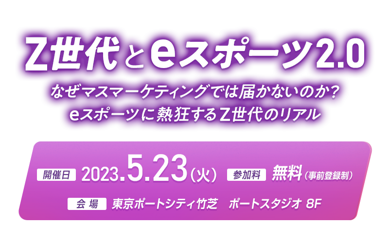

お申し込み受付を
終了しました
10年後に消費の主役となるZ世代。
彼らが熱狂するコミュニティの一つに「eスポーツ」があります。
競技大会には数万人のZ世代が訪れ、LIVE配信では長時間視聴をする熱心なファンも少なくありません。
なぜZ世代はeスポーツに熱狂するのか。
グローバルの事例も交えながら、今盛り上がる「eスポーツ」を分析。
そこからひも解く「Z世代をターゲットにした効果的なマーケティング」について議論していきます。
開催概要
- 名称
-
Z世代とeスポーツ2.0
なぜマスマーケティングでは届かないのか？
eスポーツに熱狂するZ世代のリアル
- 日程
-
2023
年
5
月
23
日（火）
15:00～18:00（予定）
- 会場
-
東京ポートシティ竹芝8F／ポートスタジオ
東京都港区海岸1-7-1
- 主催
- 日経クロストレンド
- 協賛
- ライアットゲームズ
- 参加料
- 無料（事前登録制）
- 定員
- 100名（先着順）
プログラム
※講演者や講演時間など、プログラムは変更になる場合がございます。予めご了承ください。
-
15:00～15:50
-
セッション1（パネルディスカッション）
Z世代×eスポーツ2.0
マーケティングアナリスト
芝浦工業大学 教授 原田 曜平 氏1977年生まれ。慶応義塾大学商学部卒業後、博報堂に入社。ストラテジックプランニング局、博報堂生活総合研究所、研究開発局を経て、博報堂ブランドデザイン若者研究所リーダー。2018年に退職し、マーケティングアナリストとして活動。専門は日本や世界の若者の消費・メディア行動研究及びマーケティング（調査、インサイト開発、商品・パッケージ開発、広告制作等）。「さとり世代」「マイルドヤンキー」「Z世代」など様々な流行語を作り出している。著書に「平成トレンド史」「それ、なんで流行ってるの？」「Z世代 若者はなぜインスタ・TikTokにハマるのか？」などがある。
SHIBUYA109エンタテイメント
SHIBUYA109 lab.所長 長田 麻衣 氏総合マーケティング会社にて、主に化粧品・食品・玩具メーカーの商品開発・ブランディング・ターゲット設定のための調査やPRサポートを経て、2017年に株式会社SHIBUYA109エンタテイメントに入社。SHIBUYA109マーケティング担当としてマーケティング部の立ち上げを行い、2018年5月に若者研究機関「SHIBUYA109 lab.」を設立。現在は毎月200人のaround20（15歳～24歳の男女）と接する毎日を過ごしている。宣伝会議等でのセミナー登壇・TBS『ひるおび！』コメンテーター・著書『若者の「生の声」から創る SHIBUYA109式 Z世代マーケティング（プレジデント社）』、その他メディア寄稿・掲載多数。

ODYSSEY
代表 平岩 康佑 氏朝日放送にアナウンサーとして入社しプロ野球や女子プロゴルフなどの実況を担当。17年には高校野球の実況でANNアナウンサー賞 優秀賞を受賞。2018年に退社し、日本初のeスポーツキャスター事務所となる株式会社ODYSSEYを設立。アナウンサーのマネジメント事業やコンサルティング業を展開し、自らも日本最大級のeスポーツイベントRAGEやCRカップなどで実況を担当。著書にKADOKAWA「人生の公式ルートにとらわれない生き方」
合同会社ライアットゲームズ
社長／CEO 藤本 恭史 氏国内IT企業でのフィールドエンジニアを経て、1998年11月よりマイクロソフト（現・日本マイクロソフト）に入社したのち業務執行役員Windows本部長及びセントラルマーケティング本部長、2015年7月からはペイパルにおけるマーケティング統括等を歴任。2018年3月より合同会社ライアットゲームズにパブリッシング統括ディレクターとして入社。2022年2月21日付けで社長／CEOに就任。
＜モデレーター＞
日経クロストレンド 佐藤 央明
仙台市出身。出版社勤務後、04年日経ホーム出版社（現・日経BP）入社。「日経トレンディ」「日経ビジネス」記者などを経て、2017～19年に日経トレンディ編集長。12月号恒例の「ヒット商品ランキング」デスク歴は約10年。21～22年に日経クロストレンド編集長。23年より現職。東京大学法学部卒。
-
15:50～16:30
-
セッション2（パネルディスカッション）
YouTubeからみるeスポーツ2.0に熱狂するZ世代
マーケティングアナリスト
芝浦工業大学 教授 原田 曜平 氏1977年生まれ。慶応義塾大学商学部卒業後、博報堂に入社。ストラテジックプランニング局、博報堂生活総合研究所、研究開発局を経て、博報堂ブランドデザイン若者研究所リーダー。2018年に退職し、マーケティングアナリストとして活動。専門は日本や世界の若者の消費・メディア行動研究及びマーケティング（調査、インサイト開発、商品・パッケージ開発、広告制作等）。「さとり世代」「マイルドヤンキー」「Z世代」など様々な流行語を作り出している。著書に「平成トレンド史」「それ、なんで流行ってるの？」「Z世代 若者はなぜインスタ・TikTokにハマるのか？」などがある。
SHIBUYA109エンタテイメント
SHIBUYA109 lab.所長 長田 麻衣 氏総合マーケティング会社にて、主に化粧品・食品・玩具メーカーの商品開発・ブランディング・ターゲット設定のための調査やPRサポートを経て、2017年に株式会社SHIBUYA109エンタテイメントに入社。SHIBUYA109マーケティング担当としてマーケティング部の立ち上げを行い、2018年5月に若者研究機関「SHIBUYA109 lab.」を設立。現在は毎月200人のaround20（15歳～24歳の男女）と接する毎日を過ごしている。宣伝会議等でのセミナー登壇・TBS『ひるおび！』コメンテーター・著書『若者の「生の声」から創る SHIBUYA109式 Z世代マーケティング（プレジデント社）』、その他メディア寄稿・掲載多数。
ODYSSEY
代表 平岩 康佑 氏朝日放送にアナウンサーとして入社しプロ野球や女子プロゴルフなどの実況を担当。17年には高校野球の実況でANNアナウンサー賞 優秀賞を受賞。2018年に退社し、日本初のeスポーツキャスター事務所となる株式会社ODYSSEYを設立。アナウンサーのマネジメント事業やコンサルティング業を展開し、自らも日本最大級のeスポーツイベントRAGEやCRカップなどで実況を担当。著書にKADOKAWA「人生の公式ルートにとらわれない生き方」
合同会社ライアットゲームズ
社長／CEO 藤本 恭史 氏国内IT企業でのフィールドエンジニアを経て、1998年11月よりマイクロソフト（現・日本マイクロソフト）に入社したのち業務執行役員Windows本部長及びセントラルマーケティング本部長、2015年7月からはペイパルにおけるマーケティング統括等を歴任。2018年3月より合同会社ライアットゲームズにパブリッシング統括ディレクターとして入社。2022年2月21日付けで社長／CEOに就任。
＜モデレーター＞
日経クロストレンド 佐藤 央明
仙台市出身。出版社勤務後、04年日経ホーム出版社（現・日経BP）入社。「日経トレンディ」「日経ビジネス」記者などを経て、2017～19年に日経トレンディ編集長。12月号恒例の「ヒット商品ランキング」デスク歴は約10年。21～22年に日経クロストレンド編集長。23年より現職。東京大学法学部卒。
＜プレゼンテーション＞
グーグル
YouTube Game Contents Partnerships
Strategic Partner Manager 隅田 裕也 氏YouTubeゲーム部門担当として2016年より事業開発とゲーム開発企業とのパートナーシップ全般を統括。国内外の様々なゲーム企業のYouTube活用やゲーム関連動画の規模拡大に従事。
-
16:40～17:20
-
トークセッション
ソニー×ライアット スペシャルトークセッション
ソニー
共創戦略推進部門
パートナー戦略部
統括部長 鈴木 順也 氏ライアットゲームズ
ビジネスデベロップメント
ジャパンリード 進 浩一郎 氏
-
17:20～18:00
-
交流会「eスポーツでツナガル」
プログラム終了後に、来場された方向けに懇親会を開催します。
簡単なお食事とお飲み物をご用意いたしましたので、ぜひご参加ください。
ご希望の方は参加登録時にお知らせください（参加費無料）。
お申し込み
●ご来場の皆様へ
・手洗い・消毒・うがいの励行やマスクの着用など感染予防にご協力をお願いいたします。
・運営スタッフもマスクを着用させていただく場合があります。ご了承ください。
・体調に不安のある方はくれぐれもご無理をなさらないようお願いいたします。
お問い合わせ
日経BP読者サービスセンターセミナー係
お問い合わせお申し込み受付を
終了しました